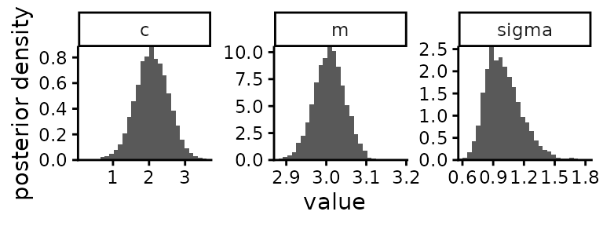
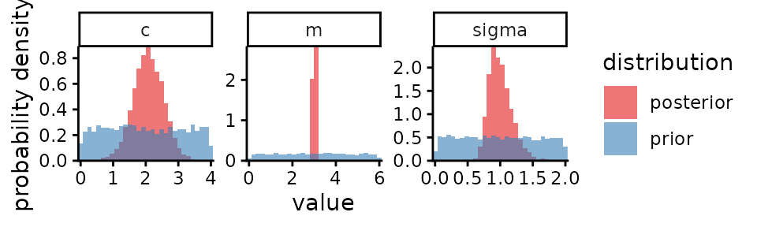
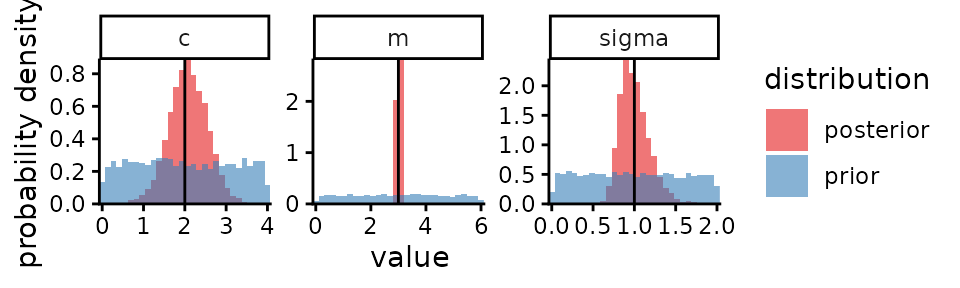
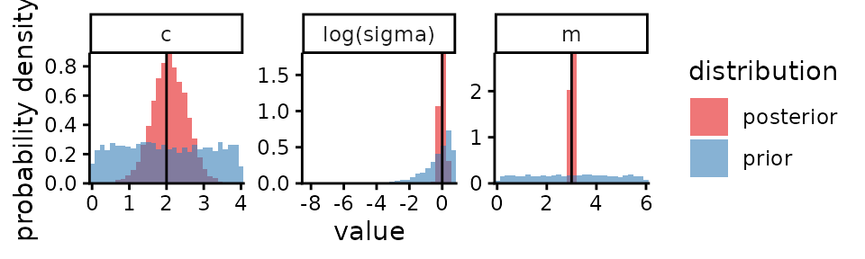

Load the example Stan output included with mastiff, from
a simple linear normal regression model:
.
stan_eg <- mastiff::stan_example_regression
names(stan_eg)
#> [1] "posterior_samples" "prior_samples" "true_values"
stan_eg$posterior_samples
#> Inference for Stan model: anon_model.
#> 4 chains, each with iter=2000; warmup=1000; thin=1;
#> post-warmup draws per chain=1000, total post-warmup draws=4000.
#>
#> mean se_mean sd 2.5% 25% 50% 75% 97.5% n_eff Rhat
#> m 3.01 0.00 0.04 2.93 2.98 3.01 3.03 3.08 1474 1
#> c 2.08 0.01 0.47 1.14 1.78 2.08 2.40 2.99 1516 1
#> sigma 1.01 0.01 0.18 0.72 0.88 0.98 1.11 1.43 1286 1
#> lp__ -9.83 0.05 1.44 -13.52 -10.48 -9.47 -8.78 -8.19 1016 1
#>
#> Samples were drawn using NUTS(diag_e) at Thu Jun 19 18:44:33 2025.
#> For each parameter, n_eff is a crude measure of effective sample size,
#> and Rhat is the potential scale reduction factor on split chains (at
#> convergence, Rhat=1).For each parameter plot the marginal posterior (i.e. the posterior for the value of that parameter regardless of any other parameter):
plot_posterior(stan_eg$posterior_samples)
Overlay plots of the posterior and prior distributions1:
plot_posterior(stan_eg$posterior_samples,
prior_samples = stan_eg$prior_samples)
For data that is simulated using the same likelihood that our inference is based on, we know the true values of the parameters we are estimating. Include those in our plots2:
plot_posterior(stan_eg$posterior_samples,
prior_samples = stan_eg$prior_samples,
true_param_values = stan_eg$true_values)
Specify a transformation for some parameters. Note the parameter
names are not automatically updated in the plot: handle this with
labels argument.
plot_posterior(stan_eg$posterior_samples,
prior_samples = stan_eg$prior_samples,
true_param_values = stan_eg$true_values,
transforms = list(sigma=log),
labels = c(sigma = "log(sigma)")
)